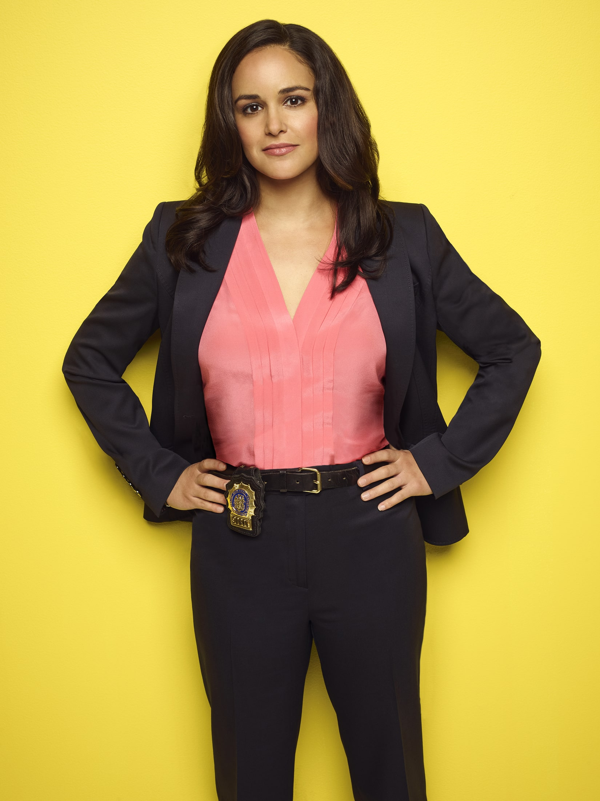

Description
Brooklyn Nine-Nine is a comedy series following the exploits of Det. Jake Peralta and his diverse, lovable colleagues as they police the NYPD's 99th Precinct.
Captain Ray Holt takes over Brooklyn's 99th precinct, which includes Detective Jake Peralta, a talented but carefree detective who's used to doing whatever he wants. The other employees of the 99th precinct include Detective Amy Santiago, Jake's over achieving and competitive partner; Detective Rosa Diaz, a tough and kept to herself coworker; Detective Charles Boyle, Jake's best friend who also has crush on Rosa; Detective Sergeant Terry Jeffords, who was recently taken off the field after the birth of his twin girls; and Gina Linetti, the precinct's sarcastic administrator.
Seasons and Episodes
Brooklyn Nine-Nine main characters
Jacob "Jake" Jeffrey Peralta is the main protagonist of the show. He was a cocky and immature but talented NYPD detective stationed in Brooklyn's 99th Precinct. "Jacob Peralta is my best detective. He likes putting away bad guys and he solving puzzles. The only puzzle he hasn't solved is how to grow up."Peralta is a cop that has never been one to follow the rules too closely. Perhaps because he has the best arrest record among his colleagues, he's been enabled - if not indulged - throughout his entire career. That is, until the precinct gets a new commanding officer, Captain Raymond Holt, who reminds this hotshot cop to respect the badge.
Chief Amy Santiago is a main character of the show. She is a Chief of Department, former sergeant and a former detective at the 99th precinct of the NYPD. Always eager to impress, Amy is looking for a mentor to help her achieve her dream of being the youngest person to be promoted to Captain. Amy is an incredibly ambitious and driven detective who always strives for perfection in nearly everything she does. Like Jake, she is extremely competitive and stubborn, doing whatever it takes to win a bet or competition.Amy is utterly obsessed with anything that has to do with organization or rules, with one of her favourite pastimes even being creating binders for any given situation. She is often made fun of by others for being a “goody-two shoes”, as she has shown to be incapable of even breaking the smallest rule.
Detective Charles Boyle is a main character of the show. He is the precinct's workhorse. He is shown to be not that brilliant and not physically gifted, although he tries harder than anyone else. He has an extremely close, almost brotherly relationship with Jake Peralta - who acts primarily as Charles's guide. Charles worships Jake to the extent that he becomes violently jealous at the concept of being replaced.[9] He also involves himself unnecessarily deeply with Jake's relationship with Amy, which both parties see as creepy and annoying. In spite of this, Charles cares a great deal about his friends.
Captain Terrence “Terry” Vincent Jeffords is a main character of the show. He is a linebacker of a man who's lost his nerve, not because he's a wimp, but because a year prior to the series, his wife Sharon had twin baby girls; Cagney and Lacey, and he can't imagine not seeing them grow up. Terry is caring, protective over the squad, and hardworking. He has a habit of referring to himself in the third person. Terry is a good cop and a serious person, but he is also extremely smooth and everyone in his precinct really likes him - he is almost as much of a father figure to some detectives as Holt is.
Rosalita "Rosa" Diaz is a main character of the show. She is considered "the tough guy" and the "badass" in the Precinct. Rosa is scary, smart, secretive, and difficult to read. Most of the members of the precinct are frightened by her. Rosa takes pride in the fact that no one knows much about her. Jake only knows three facts about her, one of which is that she won't let people crash at her place, despite the fact that Rosa refers to him as her "closest friend". In 99, she is known to be bisexual. Rosa is the scariest detective in the precinct, but is not a bad person, proven by her fierce commitment to being a detective, and how she proves useful when paired with other detectives. On the other hand, they often have to put up with her savagely blunt nature whenever she's around.
Michael Hitchcock is a main character of the show. He was one of the older male detective at the 99th Precinct. His partner is Norm Scully, who is equally lazy. Hitchcock's first year of service with the NYPD is unspecified, but by the time of the show he is an aging, lazy detective who by his own admission does "nothing all day." He is best friends with Det. Scully, with whom he has worked for almost thirty years. In stark contrast to his more upstanding coworkers and friends, Hitchcock is a depraved and hedonistic man who has little concern for the comfort of those around him. He also openly cheats on his (now ex) wife and cheered at the news of her death, as it meant his alimony payments would end.
Detective Norman "Norm" Scully is a main character of the show. He is an older male detective at the 99th Precinct. His partner is Michael Hitchcock, who is equally lazy. Scully can sing opera.[1] He has an ex-wife and a dog, both of whom are named Kelly. He has two children, both of whom he says no longer speak to him. He is assumed to be currently in a relationship with Cindy Shatz. Scully has fallen for at least 20 Nigerian scams. Norm has a twin brother called Earl. The two don't get along anymore and have a hostile relationship because Earl slept with Norm's ex-wife.
Regina "Gina" Linetti is a main character of the show. She was the 99th Precinct's sardonic civilian administrator. At the end of season two, she left The 99th Precinct to join Captain Raymond Holt, working at the NYPD's public relations office. She returned to her old post at the end of The Oolong Slayer. At the end of the season 6 episode, The Tattler, she decided to quit working at the 99. She made her last regular appearance in the fourth episode of season 6, Four Movements. However, she returns as a guest in Return of the King and The Last Day Pt 2. Gina was a childhood friend of Detective Jake Peralta and spent a lot of time over at his Nana's. She was name-checked in her kindergarten teacher's suicide note which she still likes to brag about.
Deputy Commissioner Raymond Jacob Holt is one of the main characters of the show. He was the Captain of the 99th Precinct and was formerly a uniformed officer. Outwardly he is strict, hardworking, stoic, staunchly professional, and a stickler for the rules. Inwardly, he is a warm, empathetic, devoted, and kind-hearted man who cares deeply about the officers and employees under his command and frequently participates in office antics, competitions, and pranks. Though he is often lampooned by his colleagues for his lack of displaying emotion or facial expressions, he is held in the highest regard by them and has developed close relationships with most of them. When Holt grew up, he went on to join the NYPD around 1977 and was promoted to detective after 1 month. He came out as gay in 1987. As a black, gay police officer, Holt experienced an avalanche of discrimination, profiling, homophobia, and slander for many years but fought through it all anyway with his head held high and even went on to marry Kevin Cozner, a classics professor. In addition to decades of police work, during which time he arrested over six hundred people and caught a number of very high profile criminals (e.g. The Disco Strangler), Holt spent eight unhappy years in the public affairs office all the while fighting to become eligible for a command of his own.